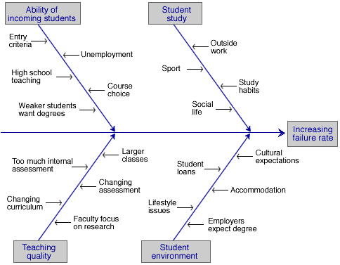

Finding the cause of problems
Control charts (and other collected data) may indicate problems with a system. However, after detection of a problem, its cause must be identified in order to rectify it. This is usually a non-trivial exercise and the following tools often help.
Brainstorming
In a brainstorming session, all team members contribute short phrases that are written on either a large sheet of paper or individual scraps of paper (post-it notes are good). The points should be written down without discussion or editing, and all team members should be encouraged to contribute.
Once these ideas have been written down, they must be structured or grouped in some way.
Cause-and-effect diagrams
After possible causes for a problem have been contributed in a brainstorming session, they can be structured in a cause-and-effect diagram (also called a fishbone diagram).

This structuring of possible causes helps to focus attention on the most likely causes and on ones that may be altered in the 'Do' step in the Plan-Do-Check-Act cycle.